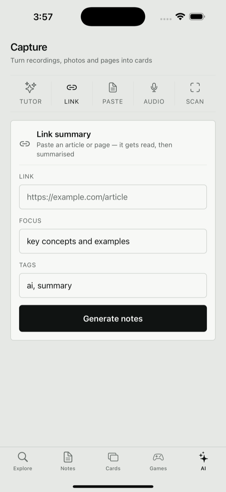
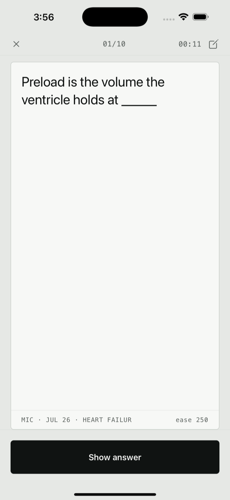
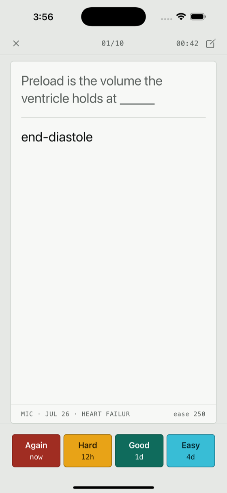
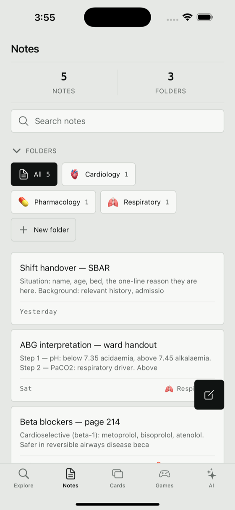
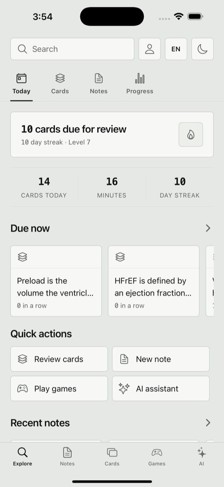

iPhone y iPad · Gratis · Sin cuenta
Graba la clase.Fotografía la página.Pega el enlace.
Se convierte en tarjetas que te evalúan, y cada tarjeta sabe de dónde viene.
Repasar, exámenes y juegos son gratis sin límite.
De dónde viene una tarjeta
Las tarjetas llevan su origen: qué la capturó, el día en que llegó y el apunte del que salió. Semanas después, cuando una tarjeta aparece y no la ubicas, puedes volver a la fuente de la que salió.
La línea al pie de la tarjeta es la fuente. Va en cada tarjeta, en cada sesión. Los cuatro botones muestran lo que harán antes de que los presiones.
La mayoría de las apps de estudio empiezan después de la parte difícil
Dan por hecho que el material ya está escrito, ya está organizado, ya es tuyo. Quat empieza en la clase.
Audio
Graba una clase, un seminario o a ti mismo repasando un tema en voz alta. Quat lo transcribe y saca lo que vale la pena recordar.
Foto
Apunta la cámara a una página del libro, un pizarrón, un apunte o tu propia letra. Quat lee el texto.
Enlace
Pega una URL. Quat descarga la página, la lee y resume lo que importa. Lee la página real, así que no puede inventar lo que no está ahí.
Repaso que termina
La repetición espaciada programa cada tarjeta para el día en que estás a punto de olvidarla. Cuando terminas las tarjetas del día, la sesión termina y te lo dice. No inventa más trabajo para retenerte en la app.
Sin confeti, sin culpa por la racha, sin insignias que te feliciten por abrir la app. Cada número va en una fuente monoespaciada con cifras tabulares, para que conteos e intervalos se lean de un vistazo.
Pantallas





La app está completamente en español; las capturas de pantalla muestran la versión en inglés.
Privada por defecto
Sin cuenta. Sin registro. Tus apuntes y tarjetas se guardan en tu dispositivo, no en un servidor.
- No se sube nada salvo que uses una función de captura, y solo lo que le entregaste
- Sin analítica, sin rastreo, sin publicidad
- La ficha del App Store lo declara: datos no vinculados a tu identidad
- Todo funciona sin conexión excepto la captura
Qué cuesta
Todo lo que ocurre en tu dispositivo — repasar, exámenes, juegos, escribir y editar tus propios apuntes y tarjetas — es gratis y sin límite. La suscripción amplía los límites mensuales de lo que usa el modelo: la captura, el tutor y la creación de tarjetas. Mensual o Anual, con cargo a tu cuenta del App Store. Se renueva hasta que la canceles, lo cual puedes hacer en cualquier momento en los ajustes de tu cuenta.
También incluye
- Un tutor que responde desde tus propios apuntes, y cita cuál
- Modo examen autocalificado, separado de tu calendario de repaso
- Parejas, ronda rápida, quiz y un temporizador de estudio
- Mazos compartidos cifrados — se sellan en tu dispositivo antes de salir de él
- Contenido de tarjetas en 21 idiomas
Repasar, exámenes y juegos son gratis sin límite.